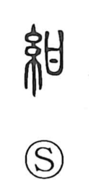

紺

Uncategorized
Kun: | On: kon, kan
navy blue ・ dark blue ・ deep indigo
Explanation
紺 is a phono-semantic character: the left element 糸 points to silk and dyeing, while the right element 甘 acts as the phonetic, supplying the on-reading kan/kon. The Shuowen defines it as dark-blue silk—cloth dyed to a deep indigo tone. Historical testimony in the Wei Zhi (Sanguozhi) records the king of Wei presenting Queen Himiko with fifty bolts of 紺青, vividly indigo-dyed cloth, underscoring the color’s value and prestige. The graph thus names a rich navy-blue associated with fine dyed textiles.